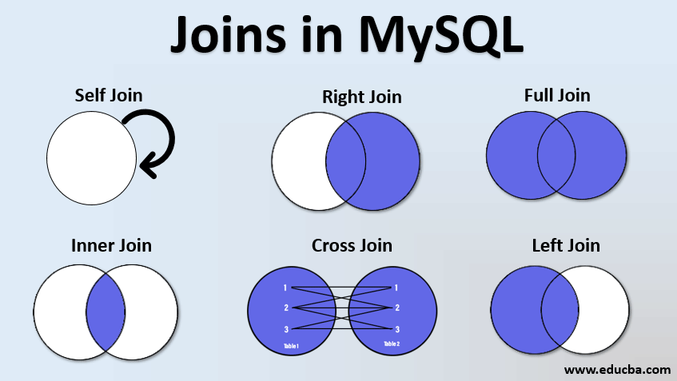
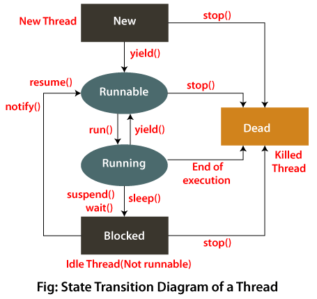
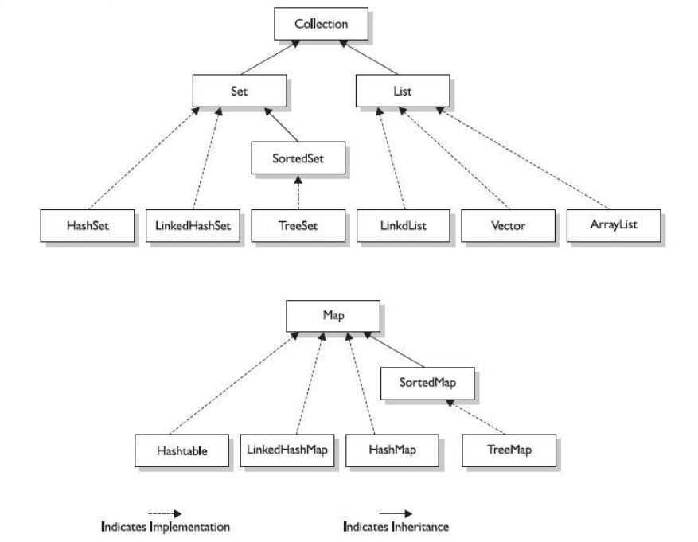

FSST#
Show code cell source
import schemdraw
import schemdraw.elements as elm
import schemdraw.dsp as dsp
import schemdraw.logic as lgc
from typing import List, Callable, Self
from dataclasses import dataclass
Objecktorientierte Programmierung#
Sinn OOP#
Initialisierung durch Konstruktor und Destruktor
kein uninitialisiertes Objekt möglich. Objekt selbst für Entsorgen zuständig, speicher gehört dem ObjektZugriffsmodifizierer auswechselbarkeit von Komponenten e.g. Array \(\Rightarrow\) Linked List
public private protected
Gleiche Funktionsnamen (Lösbar auch über module) führen zu Kollisionen
Einfacheres Ausdrücken von Problemen
Programmieren im Größeren Maßstab
bessere Codewiederverwendung
Bsp Programme
Stack, FIFO Implementieren
public class Stack{
private final int DEFAULT_SIZE = 10;
private int[] _stack;
private int _size;
private int _sp = 0;
public Stack(){
_size = DEFAULT_SIZE;
_stack = new int[_size]
}
public Stack(int size){
_size = size;
_stack = new int[_size];
}
public boolean isEmpty(){
return _sp == 0;
}
public boolean isFull(){
return _sp == _size;
}
public void push(int elem){
_stack[_sp++] = elem;
}
public int peek(){
return _stack[_sp -1];
}
public int pop(){
return _stack[--_sp];
}
public int count(){
return _sp;
}
public int capacity(){
return _size;
}
}
public class Main{
public static void main(String[] args){
Stack s = new Stack();
s.push(1);
s.push(2);
s.push(3);
System.out.println(s.peek());
System.out.println(s.count());
while(s.isEmpty()){
System.out.println(s.pop());
}
if(s.isEmpty()){
System.out.println("Empty");
} else {
System.out.println("Not Empty");
}
}
}
public class FIFO<T> {
private int _oelem = 0;
private int _nelem = 0;
private T[] _elms;
private int _count = 0;
public FIFO(int size){
_elems = new T[size];
}
public void enqueu(T elem){
if(_count == _elms.length){
throw new Exception("FIFO is full")
}
__count++;
_elms[_nelem++] = elem;
}
public T dequeu(){
if(_count==0){
return null;
}
_count--;
return _elm[_oelem++];
}
}
Vererbung | Inheritance#
Inheritance gibt eine ist ein/e Beziehung vor.
Bspw. ein Arbeiter ist ein Angestellter,
genauso wie ein Manager ein Angestellter ist.
Der Manager haut auch eine hat eine Beziehung,
da dieser/diese untergebene hat.
Bei Vererbung kann behavior (Methoden und Properties) vererbt werden, welches das Verhalten verändern kann, bzw. aufgaben auf die vererbten Methoden delegieren kann (eg. WinForms, Swing/AWT).
class Employee{}
class Worker extends Employee {}
class Manager extends Employee {
public Employee[] subordinates;
}
Polymorphie | Polymorphism#
Bei Polymorphie geht es darum,
dass eine Klasse wie eine andere auftreten kann.
In dem Beispiel kann die animalScreams Methode sowohl eine Cat aber auch einen Dog annehmen.
Es ist keine Information über den eigentlichen Typ notwendig.
Alle Informationen welche man hat,
ist dass die Implementation von a von Animal erbt
und somit die scream Methode hat.
Mit Polymorphie kann jeder Typ,
welcher von Animal erbt, als Animal verwendet werden.
Wenn eine bestimmte Subklasse anders behandelt werden soll,
muss dies speziell überprüft werden (instanceof in Java, typeof mit == in C#).
Eine Bibliothek könnte einen weiteren Type Bird definieren,
welcher ebenfalls von Animal erbt.
Die Implementation von Bird ist somit mit der Methode von AnimalHandler kompatibel.
Dadurch führt Polymorphie zu einer Guten Erweiterbarkeit.
abstract class Animal{
public abstract void scream();
}
class Cat extends Animal {
public void scream() {
System.out.println("Meow");
}
}
class Dog extends Animal {
public void scream() {
System.out.println("Wuff");
}
}
class AnimalHandler {
public static void animalScreams(Animal a){
System.out.println("This Animal Screams");
a.scream();
}
}
Interfaces#
Interfaces definieren eine Schnittstelle, welche garantiert eingehalten werden.
Meist sind es Explizite Interfaces, wo explizit angegeben wird, welche Interfaces Implementiert werden.
Manche Programmiersprachen (Go, Python), haben auch Implizite Interfaces, wo ein Fehler auftritt, wenn die Interface-Methoden nicht vorhanden sind.
Interfaces geben vor, welche Properties/Methoden eine Klasse implementieren muss, damit sie als das Interface Polymorph verwendet werden kann.
Interfaces werden auch häufig in stdlibs einer Sprache verwendet.
Beispiele in Java:
IterableIteratorSerializeableListCloseableAutoCloseable
Beispiele in C#:
IEnumerableIEnumeratorIListIDisposable
Iterator bsp.:
class Student{
public String _name;
public int _matNo;
public Student(string name, int matNo){
_name = name;
_matNo = matNo;
}
public String toString(){
return "No: " + _matNo + ", Name: " + _name;
}
}
class Classroom implements Iterable<Student>{
Student[] _students
public Iterator<Student> iterator(){
return new this.ClassroomIterator();
}
class ClassroomIterator implements Iterator<Student>{
int pointer = 0;
public boolean hasNext(){
return pointer < _students.length;
}
public Student next(){
return _students[pointer++];
}
}
}
class Main{
public static void main(String args[]){
Student[] s = new Student[]{
new Student("x", 0),
new Student("y", 1)
};
Classroom cr = new Classroom();
cr._students = s;
for(var st : cr){
System.out.println(st);
}
var it = cr.iterator();
while(it.hasNext()){
Student st = it.next();
System.out.println(it);
}
}
}
C# Bsp
namespace Test{
class Student{
public string Name {get; set;}
public int MatNo {get; set;}
public String ToString(){
return "No: " + _matNo + ", Name: " + _name;
}
}
class Classroom : IEnumerable{
public Student[] Students {get; set;}
public IEnumerator GetEnumerator(){
return new ClassroomEnumerator(){
Students = Students
};
}
}
class ClassroomEnumerator : IEnumerator {
Student[] Students {get; set;}
int pointer = -1;
public object Current => Students[pointer];
public bool MoveNext(){
return ++pointer < Students.Length;
}
public void Reset(){
pointer = -1;
}
}
class Program{
public static void Main(){
Student sts = new Student[]{
new Student(){Name = "a", MatNo = 1},
new Student(){Name = "b", MatNo = 2}
};
Classroom cr = new Classroom(){Students = sts};
foreach(Student st in cr){
Console.WriteLine(st);
}
IEnumerator it = cr.GetEnumerator();
while(it.MoveNext()){
Console.WriteLine(it.Current);
}
}
}
}
Suchen und Sortieren#
def is_sorted(lst:List):
for i in range(len(lst)-1):
cur = lst[i]
next = lst[i+1]
if cur > next:
return False
return True
Binary Search#
Zeitkomplexität: O(log(n))
Binary Search erfordert, dass das Datenset sortiert ist.
Bei Binary Search wird der gesuchte Wert mit dem mittleren Wert verglichen, wenn der Wert:
der Gesuchte ist, so ist der Wert gefunden,
größer als der Wert größer als der Gesuchte ist,
so wird nurmehr der Wertebereich bis zu dem Mittleren Wert angeschaut,kleiner als der Gesuchte ist,
so wird nurmehr der Wertebereich ab dem Mittelwert angeschaut.
def binary_search(lst:List, search_value, start=0, end=None):
if end is None:
end=len(lst)
middle = (end-start)//2 +start
if lst[middle] == search_value:
return middle
if lst[middle] < search_value: # element must be in right subarray
return binary_search(lst, search_value, start=middle+1, end=end)
if lst[middle] > search_value: # element must be in left subarray
return binary_search(lst, search_value, start=start, end=middle-1)
mlst = [0, 1, 2, 3, 4, 5, 6, 7, 8]
print(f"{is_sorted(mlst)=}")
for v in mlst:
print(binary_search(mlst, v))
is_sorted(mlst)=True
0
1
2
3
4
5
6
7
8
BubbleSort#
Zeitkomplexität: O(n^2)
Bei Bubble Sort wird das Datenset durchlaufen, jeder Wert wird mit dem nächsten Wert verglichen, wenn der momentane Wert größer als der nächste ist, werden die Werte ausgetauscht. Dabei ‘bubbled’ mit jeden Schleifendurchlauf der nächst größte Wert an die korrekte Stelle, wodurch der zu durchlaufende Bereich immer kleiner wird
def bubble_sort(lst:List):
for top in range(len(lst)-1, 0, -1):
for cur in range(0, top):
next = cur+1
if lst[cur] > lst[next]:
temp = lst[cur]
lst[cur] = lst[next]
lst[next] = temp
return lst
mlst = [3, 4, 5, 1, 2, 6]
mlst_s = bubble_sort(mlst)
print(f"{is_sorted(mlst_s)=}")
print(mlst_s)
is_sorted(mlst_s)=True
[1, 2, 3, 4, 5, 6]
MergeSort#
Zeitkomplexität: O(n*log(n))
Teil das Array in der Mitte in eine linke und eine rechte Seite und rufe auf beide Array-Hälften Mergesort auf. Sobald ein Array nur noch ein Element beinhaltet ist dieses Sortiert und wird zurückgegeben. Somit sind die linke und rechte Hälfte sortiert. Beide Hälften werden dann in einer Merge-Funktion, richtig sortiert, zusammengefügt.
def merge_sort(lst:List):
if len(lst) <= 1:
return lst
left = merge_sort(lst[:len(lst)//2])
right = merge_sort(lst[len(lst)//2:])
return merge(left, right)
def merge(left:List, right:List):
left_ptr = 0
right_ptr = 0
lst:List = []
for i in range(len(left)+len(right)):
if left_ptr >= len(left): # check if left pointer is out of bounds => add all elements of right to lst and exit loop
while right_ptr < len(right):
lst.append(right[right_ptr])
right_ptr += 1
break
if right_ptr >= len(right): # check if right pointer is out of bounds => add ell elements of left to lst and exit loop
while left_ptr < len(left):
lst.append(left[left_ptr])
left_ptr += 1
break
if left[left_ptr] < right[right_ptr]: # left element is smaller than right => left element should be added next
lst.append(left[left_ptr])
left_ptr += 1
else: # right element is smaller than right => right element should be added next
lst.append(right[right_ptr])
right_ptr += 1
return lst
mlst = [3, 4, 5, 1, 2, 6]
mlst_s = merge_sort(mlst)
print(f"{is_sorted(mlst_s)=}")
print(mlst_s)
is_sorted(mlst_s)=True
[1, 2, 3, 4, 5, 6]
QuickSort#
Zeitkomplexität: O(n* log(n))
Bei Quicksort wird ein Pivot-Element zufällig ausgewählt (meist das letzte). Es wird nun vom Startwert solange ein Pointer inkrementiert, bis der Wert an der Position des Pointers größer ist als das Pivot-Element. Danach wird von der Endposition ein Pointer dekrementiert, bis der Wert an der Position kleiner als das Pivot-Element ist. Um nun keinen Fehler zu machen, wird überprüft, dass die Potion des ersten Pointer kleiner als der Zweite ist, wenn dies nicht der Fall ist, wird die Schleife abgebrochen. Ansonsten werden die Werte an den beiden Pointern ausgetauscht.
Wenn die Schleife beendet ist, werden das Pivot-Element und der Wert des ersten Zeigers ausgetauscht. Nun befinden sich alle Werte kleiner als das Pivot-Element links vom Pivot-Element und alle Werte größer als das Pivot-Element auf der rechten Seite.
Beide Hälften werden nun wieder mit QuickSort sortiert.
def quicksort(lst:List, l=0, r=None):
if r is None:
r = len(lst)-1
if l > r:
return
i = l-1
j = r
pivo = lst[r]
while True:
i += 1
while lst[i] < pivo:
i += 1
j -= 1
while lst[j] > pivo:
j -= 1
if i >= j:
break
t = lst[i]
lst[i] = lst[j]
lst[j] = t
t = lst[i]
lst[i] = lst[r]
lst[r] = t
quicksort(lst, l, i-1)
quicksort(lst, i+1, r)
mlst = [1, 7, 5, 3, 6, 2, 8, 4]
quicksort(mlst) # sorts in place
print(f"{is_sorted(mlst)=}")
print(mlst)
is_sorted(mlst)=True
[1, 2, 3, 4, 5, 6, 7, 8]
O(n) Notation#
wozu:
Zeit und Speicher Komplexität Zuwachs vergleichen (e.g. 100 und 1000 Elemente)keine Angabe über eigentlichen Zeitverbrauch
Algorithmus Analytik
Hashing#
möglichst schnelle Suche
of Begrenzter Schlüsselraum
Funktion kann nicht Injektiv sein (kann nicht eindeutig sein, keine zwei \(x\)-Werte mit selben \(y\)-Wert) \(\Rightarrow\) Kollision möglich
\(2^{23}\) mögliche Schlüssel bei einem \(4\) Byte index \(\Rightarrow\)
Gute Eigenschaften:#
Schlüsselaufbrechung
Nebeneinanderliegende Schlüssel größtmöglicher AbstandGleichverteilung
Werte sollte möglichst gleichverteilt sein
Einwegfunktion:#
Die Funktion selbst möglichst schnell, die Inversfunktion möglichst aufwendig.
Kollisionsbehandlung#
Externes Verketten der Überläufer
Einzelnes Element wird zu Liste
Bei zu großer Belegung \(\Rightarrow\) degeneriert zu 2D Array evtl. VergrössernInternes auflösen
nächstes freies Element suchen
Löschen Problematisch
N = 11
@dataclass
class Pupil:
id:int
name:str
next: Self | None = None
def __str__(self):
return f"{{name={self.name}, id={self.id}}}"
def __repr__(self):
return f"{self.id=}, {self.name=}, next -> {repr(self.next)}"
hash_table = [None] * N
def insert_pupil(p:Pupil) -> None:
global hash_table
p_root = hash_table[hash_f(p.id)]
p.next = p_root
hash_table[hash_f(p.id)] = p
def search_pupil(id:int)->Pupil:
global hash_table
p_root = hash_table[hash_f(id)]
return deep_search(p_root, id)
def deep_search(root:Pupil|None, id:int)->Pupil:
if root is None:
return None
if root.id == id:
return root
return deep_search(root.next, id)
def hash_mod(n:int):
return n % N
hash_f: Callable[[int], int] = hash_mod
def print_table():
for p in hash_table:
print(repr(p))
insert_pupil(Pupil(id=1, name="Tom"))
insert_pupil(Pupil(id=2, name="Tim"))
insert_pupil(Pupil(id=12, name="Jim"))
print_table()
print()
print(search_pupil(2))
print(search_pupil(12))
None
self.id=12, self.name='Jim', next -> self.id=1, self.name='Tom', next -> None
self.id=2, self.name='Tim', next -> None
None
None
None
None
None
None
None
None
{name=Tim, id=2}
{name=Jim, id=12}
#define HASHSIZE 11
struct Pupil{
int id;
char name[31];
struct Pupil *pNext;
};
struct Pupil* hashtable[HASHSIZE] = {0};
void addPupil(struct Pupil*);
struct Pupil* searchPupil(int);
bool deletePupil(int);
int countPupils();
struct Pupil* Generate_Pupil(int, char*);
int getHash(int);
int main(int argc, char** argv){
addPupil(Generate_Pupil(HASHSIZE, "Fellner"));
addPupil(Generate_Pupil(HASHSIZE + 1, "Schoeppl"));
addPupil(Generate_Pupil(2*HASHSIZE + 2, "Steinmaurer"));
addPupil(Generate_Pupil(HASHSIZE + 2, "Feierabend"));
addPupil(Generate_Pupil(3*HASHSIZE + 2, "Dobler"));
printf("%4d\n", countPupils());
deletePupil(3*HASHSIZE + 2);
printf("%4d\n", countPupils());
return 0;
}
void addPupil(struct Pupil* p){
int hashv = getHash(p->id);
p->pNext = hashtable[hashv];
hashtable[hashv] = p;
}
struct Pupil* searchPupil(int id){
struct Pupil* p = hashtable[getHash(id)];
while(p && p->id != id){
p = p->pNext;
}
return p;
}
bool deletePupil(int id){
struct Pupil *prev = NULL;
int hash = getHash(id);
struct Pupil* cur = hashtable[hash];
while(!cur && cur->id != id){
prev = cur;
cur = cur->pNext;
}
if(!cur){
return false;
}
if(cur == hashtable[hash]){
hashtable[hash] = cur->pNext;
} else {
prev->pNext = cur->pNext;
}
free(cur);
return true;
}
struct Pupil* Generate_Pupil(int id, char* name){
struct Pupil* p = malloc(sizeof(struct Pupil)); // typecast in c not needed
p->id = id;
strcpy(p->name, name);
p->pNext = NULL;
return p;
}
int count_list(struct Pupil* p, int acc){
if(!p){
return acc;
}
return count_list(p->pNext, acc+1);
}
int countPupils(){
int sum = 0;
for(int i = 0; i <= HASHSIZE; i++){
sum += count_list(hashtable[i], 0);
}
return sum;
}
int getHash(int id){
return (id % HASHSIZE);
}
Multiplikative Methode#
int hash(int id){
double gc = (sqrt(5) - 1) /2; // Goldener Schnitt
double product = id * gc;
return floor((product - floor(product)*HASHSIZE));
}
Algorithms & Data-Structures#
Linked List#
Bei einer Linked List behält eine Node immer einen verweis auf den nächsten Teilnehmer.
Die LinkedList wird so sequenziell aufgebaut und entwickelt sich zu einer Kette. Jeder Knoten kann als Start einer neuen LL angesehen werden, dadurch eignen sich rekursive Funktionen gut hierfür.
Eine Linked List kann sämtliche Wörterbuchoperatoren unterstützen,
unter anderem auch Hinzufügen (an einer bestimmten position), indizierter Zugriff und auch Löschen.
+ Utility Funktionen (count, …)
typedef struct Node_a {
int item;
struct Node_a* next;
} Node;
Node* new_node(int val);
void del_nodes(Node* root);
void del_node(Node* root); // no deep delete, use del_nodes for that
void insert_at(Node** root, int index, int val);
void delete_at(Node** root, int index);
int get_value_at(Node* root, int index);
unsigned int count(Node* root);
unsigned int _count(Node* root, int acc);
void print_ll(Node* root);
void main(void){
Node* root = NULL;
insert_at(&root, 0, 1);
insert_at(&root, 1, 2);
insert_at(&root, 2, 3);
insert_at(&root, 0, -1);
insert_at(&root, 2, 11);
print_ll(root);
delete_at(&root, 2);
printf("\n");
print_ll(root);
printf("\n");
for(int i = 0; i < count(root); i++){
printf("Value at %2d: %3d\n", i, get_value_at(root, i));
}
}
void insert_at(Node** root, int index, int val){
if(index <= 0){
Node* new_next = (*root);
*root = new_node(val);
(*root)->next = new_next;
return;
}
if(index == 1 || !(*root)->next){ // if the element is to be inserted after the current one or if the next element is the end of the list
Node* new_next = (*root)->next;
(*root)->next = new_node(val);
(*root)->next->next = new_next;
return;
}
insert_at(&((*root)->next), index-1, val);
}
void delete_at(Node** root, int index){
if(*root == NULL){
return;
}
if(index <= 0){
Node* tmp = *root;
*root = tmp->next;
del_node(tmp);
}
if(index == 1){
if(!((*root)->next)){ // the next element does not exist => cannot delete
return;
}
Node* new_next = (*root)->next->next; // the new next item :: 2
Node* tmp = (*root)->next; // the item to be deleted :: 11
(*root)->next = new_next; // move root->next to new_next :: 11 => 2
del_node(tmp); // delete temp :: 11
return;
}
delete_at(&((*root)->next), index-1);
}
int get_value_at(Node* root, int index){
if(root == NULL){
return (int)0;
}
if(index == 0){
return root->item;
}
return get_value_at(root->next, index-1);
}
Node* new_node(int val){
Node* root = calloc(1, sizeof(Node));
root -> item = val;
return root;
}
void del_nodes(Node* root){
Node* next = root->next;
free(root);
if(next) {
del_nodes(next);
}
}
void del_node(Node* root){
free(root);
}
void print_ll(Node* root){
if(!root){
printf("NULL\n");
return;
}
printf("%3d -> ", root->item);
print_ll(root->next);
}
unsigned int count(Node* root){
return _count(root, 0);
}
unsigned int _count(Node* root, int acc){
if(root == NULL){
return acc;
}
return _count(root->next, acc+1);
}
Stack#
Bei einem Stack handelt es sich um einen FILO (First in, Last Out),
mit push wird ein neues Element auf den Stapel gelegt,
mit pop wird das oberste Element vom Stack entfernt.
Meist bieten Bibliotheken auch noch Funktionen,
wie peek (Return the topmost element without removing it) und count.
FIFO#
Eine FIFO hat meist Funktionen
dass ein neues Element hinzugefügt wird, enqueue und dass das nächste Element entfernt wird dequeue.
(+ Utility Funktionen)
Ein FIFO kann mit einer Linked List (neues Element ist neue Node und beim entfernen wird Node wieder gelöscht) implementiert werden, oder auch mit einem Array als Ringspeicher. Beim Ringspeicher braucht man zwei Pointer, welche die einfüge und auslese Positionen festhalten. Es sollte auch ein counter für die Anzahl der Elemente definiert werden, da wenn die beiden Zeiger auf der selben Position sind, kann dies bedeuten dass der FIFO voll oder leer ist.
Baum | Tree#
Beim einem Baum,
hat ein Teilnehmer immer mehrere Nachfolger (left und right bei Binärbaum), welche in Blättern münden.
Bäume sind immer nach einer Ordnung sortiert.
Binärbäume
Es gibt verschiedene optionen eine Binärbaum auszugeben/Operationen auf diesen durchzuführen. Man unterscheidet:
Pre | Hauptreihenfolge
Operation auf sich selbst anwenden
Operation in Pre Reihenfolge auf linken Knoten anwenden
Operation in Pre Reihenfolge auf rechten Knoten anwenden
Post | Nebenreihenfolge
Operation in Post Reihenfolge auf linken Knoten anwenden
Operation in Post Reihenfolge auf rechten Knoten anwenden
Operation auf sich selbst anwenden
In | Symmetrische Reihenfolge | Sortierte Ausgabe
Operation in Post Reihenfolge auf linken Knoten anwenden
Operation auf sich selbst anwenden
Operation in Pre Reihenfolge auf rechten Knoten anwenden
Wenn ein Baum nicht ideal befüllt wird,
so kann dieser in eine LinkedList degenerieren
und das Suchen eines Elementes geht von O(log(n)) zu O(n)
Um dies zu verhindern gibt es AVL-Bäume, welche eine Balance mitberechnen. Die Balance gibt an, ob ein Baum rebalanziert werden muss. Die Balance kann rekursiv über die Differenz der Balancen der Child-Bäume errechnet werden. Wenn die absolute Balance größer \(1\) wird, so kann der Baum rebalanziert werden und damit auch Optimiert werden.
struct Node{
int id;
char name[31];
struct Node* pLeft;
struct Node* pRight;
};
struct Node* new_node(int key, char name[31]);
void add_node(struct Node** root, struct Node* elem);
void preprint(struct Node* root){
if(root == NULL){
return;
}
printf("%d\t%s", root->id, root->name);
preprint(root->pLeft);
preprint(root->pRight);
}
void main(){
struct Node* root = NULL;
add_node(&root, new_node(10, "Dobler"));
add_node(&root, new_node(5, "Feierabend"));
add_node(&root, new_node(17, "Lehner"));
add_node(&root, new_node(2, "Fellner"));
add_node(&root, new_node(25, "Steinmaurer"));
add_node(&root, new_node(8, "Waser"));
add_node(&root, new_node(19, "Auzinger"));
add_node(&root, new_node(6, "Berger"));
}
struct Node* new_node(int key, char name[31]){
struct Node* pNode = malloc(sizeof(struct Node));
pNode->id = key;
strcpy(pNode->name, name);
return pNode;
}
void add_node(struct Node** root, struct Node* elem){
struct Node* pIter;
elem->pLeft = NULL;
elem->pRight = NULL;
if((*root) == NULL){
(*root) = elem;
}
pIter = *root;
while(pIter != NULL){
if(elem->id < pIter->id){ // key of new node is lass than the current node
// move to the left
if(pIter->id != NULL){ // can move to the left
pIter = pIter->pLeft;
} else{
pIter->pLeft = elem; // cannot move to the left => insert
break;
}
}
if(elem->id >= pIter->id){ //key of new node is more or equal to the current node
//move to the right
if(pIter->id != NULL){
pIter = pIter->pRight;
} else {
pIter->pRight = elem;
}
}
}
}
struct Node{
int id;
char name[31];
struct Node* pLeft;
struct Node* pRight;
};
struct Node* new_node(int key, char name[31]);
void add_node(struct Node** root, struct Node* elem);
void preprint(struct Node* root){
if(root == NULL){
return;
}
printf("%d\t%s", root->id, root->name);
preprint(root->pLeft);
preprint(root->pRight);
}
void main(){
struct Node* root = NULL;
add_node(&root, new_node(10, "Dobler"));
add_node(&root, new_node(5, "Feierabend"));
add_node(&root, new_node(17, "Lehner"));
add_node(&root, new_node(2, "Fellner"));
add_node(&root, new_node(25, "Steinmaurer"));
add_node(&root, new_node(8, "Waser"));
add_node(&root, new_node(19, "Auzinger"));
add_node(&root, new_node(6, "Berger"));
}
struct Node* new_node(int key, char name[31]){
struct Node* pNode = malloc(sizeof(struct Node));
pNode->id = key;
strcpy(pNode->name, name);
return pNode;
}
void add_node(struct Node** root, struct Node* elem){
struct Node* pIter;
elem->pLeft = NULL;
elem->pRight = NULL;
if((*root) == NULL){
(*root) = elem;
}
pIter = *root;
while(pIter != NULL){
if(elem->id < pIter->id){ // key of new node is lass than the current node
// move to the left
if(pIter->id != NULL){ // can move to the left
pIter = pIter->pLeft;
} else{
pIter->pLeft = elem; // cannot move to the left => insert
break;
}
}
if(elem->id >= pIter->id){ //key of new node is more or equal to the current node
//move to the right
if(pIter->id != NULL){
pIter = pIter->pRight;
} else {
pIter->pRight = elem;
}
}
}
}
Recursion#
Bei Rekursiven Algorithmen ruft sich eine Funktion selbst auf. Dies führt zu einer bessern Lesbarkeit und viele Algorithmen können nur so implementiert werden (Baum Pre|In|Post Reihenfolge). Rekursive aufrufe sind langsamer als iterative Implementationen (Aufrufoverhead) und Rekursive Algorithmen können zu einen Stack-Overflow führen, wenn die Aufruftiefe zu groß ist und der Stack somit überläuft.
Eine Abhilfe ist die Verwendung von Endrekursiven Algorithmen,
welche den rekursiven Funktionsaufruf wegoptimieren und zu einer einfachen Jump Operation umwandelt.
Dies ist möglich,
wenn der rekursive Funktionsaufruf die letzte Operation zur Berechnung der Funktion ist.
Wenn der Compiler eine solche Optimierung durchführen kann,
ist man nicht mehr vom Stack-Frame limitiert.
Die Optimierung kann jedoch das Debuggen erschweren.
// Normale Faktorität
int fact(int n){
if(n <= 0){
return 1;
}
return fact(n-1)*n; // letzte Operation ist *n und nicht fact => nicht endrekursiv
}
int tail_fact(int n)
return _tail_fact(n, 1);
int _tail_fact(int n, int acc){
if(n <= 0){
return acc;
}
return _tail_fact(n-1, acc*n); // letzte Operation für Berechnung ist rekursiver Aufruf => endrekursiv
}
Databases#
Ziel ist es Daten sowie die Manipulation von Daten unabhängig vom Anwendungsprogramm zu machen.
Man hat mehrere Nachteile, wenn direkt mit den Daten gearbeitet wird, nämlich:
Inflexibel: Programmstruktur muss Datienstruktur entsprechen.
Redundant: Informationen werden meist mehrfach gespeichert und muss somit an mehreren Orten verändert werden, was zu Inkonsistenzen führen kann.
(Beispiele: Gehaltsabrechnung, Projektberichte,…)
Lösung: eine standardisierte Schnittstelle zwischen Program und Daten = Datenbanken
Das Rad muss nicht neu erfunden werden,
Datenbanken nehmen einen viele Aufgaben ab:
Fileverwaltung
Multiuserbetrieb
Zugriffsrechte
Zugriffsschutz
Datenkonsistenz
Datensicherung
Vermeidung (Reduzierung) von Redundanzen
Daher ergeben sich mehrere Anforderungen an DBs:
Logische Datenunabhängigkeit:
Daten sollen nur ein mal vorhanden sein
Jedes Programm soll die Daten so sehen, wie benötigt
Physische Datenunabhängigkeit:
Wie Daten gespeichert sind (Codierung, Speichermedium,…) soll der Benutzer nicht wissen und auch nicht brauchen.
Vorteile einer solchen DB:
Keine Redundanz
Spart SpeicherIntegrität leicht zu gewähren
Daten korrekt und vollständig
Explizite Integritätsbedingungen möglich
Flexibler Zugang zu Daten
Daten werden jeder Anwendung so gegeben, wie sie gebraucht werden
Relationales Datenmodell, Entwurf#
Im Vergleich zu anderen Datenmodellen:
Keine direkte Darstellung von Beziehungen
Es gibt nur Objekte
Definition des Modells wenn,
alle Daten als Wete in Relationen dargestellt sind und jeder Benutzerzugriff über die Werte der Daten erfolgt (Benutzer hat keine Kenntnis über Zeiger und Verkettungen)
es relationale Operationen für die Selektion, die Projektion und den Verbund unterstützt.
Relationales Datenmodell:
Entity Typen werden als Relations-Typen dargestellt.
Beziehungen werden ebenfalls als Relations-Typen dargestelle, wobei die Attributen-Menge unter anderem aus Schlüssel der Entity-Typen besteht.
Alles wird durch Relation dargestellt.
VTs Relationales Datenmodell
Beliebige Komplexität der Beziehung darstellbar
Beliebige Attribute möglich
NTs Relationales Datenmodell
Der Benutzer muss wissen, wie die Daten in Beziehung stehen
Es existiert keine direkte physische Verbindung zu den Daten
zum Auffinden der Daten Schlüssel:
Natürliche Schlüssel
Attribute welche ein Tupel eindeutig identifizieren (Projektname, Login Name) sollenKünstliche Schlüssel
Natürliche Schlüssel fehlt oft die Eindeutigkeit (Vorname, Nachname), sodass künstliche Schlüssel eingeführt werden, welche eindeutig sind (Sozialversicherungsnummer, Matrikelnr.)
Die meisten SQL-Datenbanken helfen einem auch dabei einen Künstlichen Schlüssel eindeutig zu halten mit demPRIMARY KEYKeyword.
Sekundärschlüssel sind Schlüssel, welche eine Gruppe von Objekten identifiziert.
Fremdschlüssel sind Schlüssel,
welche Beziehungen zwischen verschiedenen Relationen beschreiben.
Der Fremdschlüssel bezieht sich auf eine Primärschlüssel einer anderen Relation. keyword FOREIGN KEY (<keyname>) REFERENCES <Remote DB>(<Remote DB keyname>)
INDIZES
Indizes in Datenbanken dienen zum beschleunigten Zugriff auf die Datensätze (Zugriffstabellen zu den Dateipositionen von Datensätzen).
In der Regel sollte auf jeden Schlüssen bzw. Fremdschlüssel ein Index gelegt werden.
Stored Procedure sind Abläufe, welche gespeichert werden und auf dem Datenbankserver ausgeführt über den Namen ausgeführt werden können.
Vorteile sind:
Modulare Programmierung
Die Prozedur wird einmal erstellt und kann beliebig oft in der Anwendung aufgerufen werden.Performance
Stored Procedures werden optimiert und vor kompiliertVerbesserung der Sicherheit
Zugriff auf Stored Procedures kann erlaubt sein, während Zugriff auf Objekte nicht erlaubt sein kann
Durch Parameter können SQL-Injections verhindert werden.
Reduzierung des Datenverkehrs
TRIGGER Bei einer Änderung (INSERt, UPDATE, DELETE) wird ein Programm aufgerufen,
dieses kann die Änderung erlauben, verhindern und/oder weitere Tätigkeiten vornehmen.
Trigger können so zum Garantieren der Datenkonsistenz verwendet werden.
Relationen werden in Form von Tabellen dargestellt
Ein Tupel entspricht einer Zeile einer Tabelle
Ein Attribut entspricht einer Spalte einer Tabelle
Beziehungen:
1:1- und 1:n-Beziehungen können direkt dargestellt werden.
n:m*-Beziehungen können mittels zwischen Tabellen dargestellt werden. Bswp.
Artikel |
ArtikelNr |
Bezeichnung |
Lagerbestand |
… |
|---|
Bestellung |
BestellNr |
Lieferdatum |
Rechnungsbetrag |
… |
|---|
Artikel_BEST |
BestNr |
ArtikelNr |
Menge |
|---|
SQL#
SQL ist eine Beschreibungssprache zum anfragen von Daten, von einer Datenbank. SQL bietet eine mehr oder weniger einheitliche Schnittstelle zum abfragen von Daten.
Wichtige Keywords:
SELECT
Dieses Keyword gibt an, welche Daten die Anfrage zurückschicken soll, bspw. bei der Schuelerdatenbank Schueler.Nachmame für den/die Nachnamen der Schüler:innen.FROM
Dieses Keyword gibt an, was die Ursprungstabelle ist. Alle Anfragen sind danach relativ zu dieser Tabelle und Joins müssen entsprechend gemacht werden.WHERE
WHERE dient als filter, um nur Daten zu wählen, welche einem gewissen Kriteritum entsprechen
Weitere Operatoren welche bei einer WHERE Abfrage genutzt werden können sind:LIKEEXISTS
INNER JOIN ... ON
Ein inner Join, verbindet zwei Tabellen miteinander über einen gemeinsamen Schlüssel, (Primary Key & Foreign Key)Es gibt noch weiter Arten von JOINS hier zu sehen:
WITH ... AS
Diese Keywords signalisieren eine Sub-Query. Nach dem AS wird ein Variablenname definiert, welches wie eine weitere Tabelle verwendet werden kann.create procedure ...Erstellt eine neue stored Procedure.Alter Procedure
Verändert eine Stored Procedure und erlaubt Fehler zu beheben.EXCEC
Führt eine stored Procedure aus, nach dem Keyword folgt der stored Procedure Name und danach folgen die Parameter.
Beispiel Anfrage:
-- Oracle Demo DB: All Employees with the Same JOB as SMITH
SELECT EMP.ENAME, EMP.JOB
FROM EMP
INNER JOIN EMP AS IT ON
IT.ENAME = 'SMITH' AND
EMP.JOB = IT.JOB AND
EMP:ENAME != IT.ENAME
-- Oracle Demo DB: ALL JOB TYPES
SELECT DISTINCT(EMP.JOB)
FROM EMP
-- Oracle Demo DB: All Employees with a greater Salary than JONES
WITH
(SELECT EMP.SAL
FROM EMP
WHERE EMP.ENAME='JONES')
AS JONES_SALARY
SELECT EMP.ENAME
FROM EMP
WHERE EMP.SAL > JONES_SALARY
Beispiel Stored Procedure:
-- get all the students from a given class
create procedure get_students_from_class
-- params
@className nvarchar(50)
as
begin
select S.Vorname, S.Nachname
from Schueler as S
inner join Klasse as K ON K.Klassen_ID = S.Klassen_ID
WHERE K.Name = @className
ORDER BY S.Nachname, S.Vorname
end
Normalformen#
Erstellen von Tabellen ohne Regelwerk, kann Probleme verursachen, diese ergeben sich oft durch funktionale Abhängigkeiten.
Bsp Anomalie.
ANGEST(PERS_NR, Name, …)
PROJ(PROJ_NR, P_Name, …)
ANG_PROJ(PROJ_NR, PERS_NR, TelNr, Proz, …)
Die Relation ANG_PROJ verursacht mehrere Probleme (Anomalien):
INSERT (Einfüge) - Anomalie
Ein neuer Mitarbeiter kommt, dieser muss eingeschult werden, er ist noch an keinem Projekt beteiligt
\(\Rightarrow\) PROBLEM: Wo soll dessen TelNr gespeichert werden?DELETE (Lösch) - Anomalie
Ein Projekt wurde abgeschlossen, die Einträge in der Relation ANG_PROJ müssen gelöscht werden
\(\Rightarrow\)PROBLEM: TelNr wird mitgelöscht!UPDATE (Änderungs) - Anomalie
Ein Mitarbeiter ist an 3 Projekten beteiligt \(\Rightarrow\) es ist 3x die gleiche TelNr gespeichert
\(\Rightarrow\) PROBLEM: Bei Änderung Änderung von 3 Einträgen notwendig!
Ursache: TelNr ist in der falschen Relation gespeichert
Frage: Wo sollte TelNr gespeichert werden?
Ziele von Normalformen:
Keine INSERT, DELETE, UPDATE-Anomalien
Wenig aufwand bei späteren Erweiterungen
Übersichtlichkeit
Vermeidung von Abhängigkeiten bestimmter Funktionen
\(\Rightarrow\) z.B. Einfügen schnell, Suche langsam
1. Normalform#
Eine Relation ist in 1.NF, wenn jedes Attribut elementar ist, bedeutet, wenn es darf keine Wiederholungsgruppen geben.
Klarform, es dürfen nicht mehrere Werte in einer Zelle vorhanden sein e.g
Kundennummer |
Vorname |
Nachname |
Telefonnummern |
|---|---|---|---|
1 |
Max |
Mustermann |
123-456-7890, 987-654-3210 |
2 |
Anna |
Schmidt |
555-123-4567 |
Bei Max Musterman wäre hier ein kombinierter Wert, bestehend aus zwei Telefonnummern, vorhanden was gegen die 1. NF verstößt.
2. Normalform#
Eine Relation ist in 2. Normalform, wenn sie in 1. Normalform ist und keine Attribute von nur einem Teil des Schlüssels funktional abhängig ist.
Es sollen keine Teilinformationen eines Schlüssels in einer separaten Tabelle gespeichert werden.
Beispiel (Relationenschema wie vorheriges Beispiel für Anomalien!)
Relation ANG_PROJ(PROJ_NR, PERS_NR, TelNr, Proz, …)
Nachfolgend sind die funktionalen Abhängigkeiten in dieser Relation angeführt:
{ PROJ_NR, PERS_NR} → {Proz}
{ PROJ_NR, PERS_NR} → {TelNr}
{ PERS_NR} → {TelNr}
~~{PROJ_NR, PERS_NR} → {TelNr}~~
Problem
die 2. Normalform kann auch Probleme verursachen.
Beispiel Relation ABT(ABT_NR, AbtLeiter, GebNr, Hausmeister, …)
NF ist erfüllt, alle Attribute sind elementar
NF ist ebenfalls erfüllt, es gibt kein Attribut, das nur von einem Teil des Schlüssels funktional abhängig ist (dies in diesem Fall sowieso unmöglich, da der Schlüssel nur aus einem Attribut besteht!) Das Problem in diesem Fall ist die Tatsache, dass innerhalb der Relation eine sogenannte transitive funktionale Abhängigkeit besteht (Abhängigkeit über ein Zwischenattribut hinweg). Es gilt: {ABT_NR} → {GebNr} → {Hausmeister} Beispiele für dadurch entstehende Anomalien:
Neues Gebäude, in der sich noch keine Abteilung befindet. Wo soll Hausmeister gespeichert werden? INSERT-Anomalie!
Wenn mehrere Abteilungen im selben Gebäude sind, so ist der Hausmeister mehrfach gespeichert UPDATE-Anomalie!
Falls die einzige Abteilung eines Gebäudes wegfällt, so werden Gebäude und Hausmeister mitgelöscht DELETE-Anomalie!
Lösung 3. Normalform
3. Normalform#
Die 3. Normalform baut auf der 2. Normalform auf, verlangt aber zusätzlich, dass keine transitiven Abhängigkeiten zwischen Nicht-Schlüsselattributen vorhanden seien dürfen.
Beispiel:
Tabelle Bücher
ISBN |
Autor |
Verlag |
Verlagsort |
|---|---|---|---|
123456789 |
Max Müller |
ABC Verlag |
Berlin |
987654321 |
Anna Schmidt |
XYZ Verlag |
Hamburg |
Der Verlagsort ist funktional vom Verlag abhängig, welcher von der ISBN-Abhängig ist. Der Verlagsort ist somit nur vom Verlag abhängig und darf in der 3. NF nicht in der Tabelle vorhanden sein.
Man würde hier eine weitere Tabelle Verlage verwenden,
um die Tabelle in 3. NF zu bringen.
Tabelle Bücher
ISBN |
Autor |
Verlag |
|---|---|---|
123456789 |
Max Müller |
ABC Verlag |
987654321 |
Anna Schmidt |
XYZ Verlag |
Tabelle Verlage
Verlag |
Verlagsort |
|---|---|
ABC Verlag |
Berlin |
XYZ Verlag |
Hamburg |
Die Tabelle ist somit in 3. Normalform
ADO.Net#
using(SqlConnection connection = new SqlConnection("<connection string>")){
SqlCommand cmd = con.CreateCommand();
// setup Command
// stored procedure
cmd.CommandType = CommandType.StoredProcedure;
cmd.CommandText = "get_students_from_class"; // EXCEC not needed bc of CommandType
cmd.Parameters.AddWithValue("className", "3AHELS");
// normal SQL-Call
// CommandType.Text is default
cmd.CommandText = "SELECT S.Vorname, S.Nachname FROM Schueler AS S INNER JOIN Klasse AS K ON K.KlassenID = S.KlassenID WHERE K.Name = @className ORDER BY S.Nachname, S.Vorname";
cmd.Parameters.AddWithValue("@className", "3AHELS");
con.Open();
// reader option
using(SqlDataReader reader = cmd.ExecuteReader()){
if(!reader.HasRows){
Console.WriteLine("Response Empty");
return;
}
while(reader.Read()){
// indexed access with int to use position in response
// string to get by column name
Console.WriteLine($"{reader[0] as string} {reader["Nachname"]}...")
}
}
// returns first column first row
cmd.ExecuteScalar();
// executes transaction that does not request data, but alters it
reader.ExecuteNonQuery();
}
Connection String:
Data Source=: endpoint der DatenbankInitial Catalog=: DatenbankIntegrated Security=:True, Windows Authentifizierung oder nicht
Bsp Connection String:
"Data Source=localhost\SQLEXPRESS; Initial Catalog=NotenmanagementDB_2020_2021; Integrated Security=True";
Alternativ einschleusen über App.config-Datei.
<?xml...>
<configuration>
<startup> ... </startup>
<connectionStrings>
<add name="<Name>" connectionString="..."/>
</connectionStrings>
</configuration>
ConfigurationManager.ConnectionStrings["<Name>"].ConnectionString
Entity Framework, LINQ#
Über die IDE kann eine ORM-Layer erstellt werden (Object Relational Mapping), durch dieses können die SQL-Objekte ohne Probleme in die Sprache integriert werden. Dies wird über die Erweiterungen von Linq und operator overloading ermöglicht.
Linq nimmt die Auflösung der Fremdschlüssel ab
und erlaubt Backpopulating der Werte wodurch keine JOINS mehr gebraucht werden.
Alle Schüler einer Klasse
NotenmanagementEntity db = new NotenmanagementEntities();
var className = "3AHELS";
Method Syntax
var students = db.Schueler
.Where(s => s.Klassen.Name == className)
.Select(s => new {
s.LoginName,
s.Nachname,
s.Vorname,
s.EMailAdresse1
});
Query Syntax
var students = from s in db.Schueler
where s.Klassen.Name = className
select new {
s.Vorname,
s.Nachname,
s.EMailAdresse1
};
Selected Topics of Software Development#
GUI, Event (Java)#
In Java Events werden über Interfaces geregelt. Für jede Event-Art gibt es ein eigenes Interface, welches implementiert werden kann und als receiver des Events genutzt werden kann.
Es gibt 4-Arten wie Events implementiert werden können
Anonyme Klassen:
KeyAdapter ka = new KeyAdapter(){
@Override
public void keyPressed(KeyEvent e){
...
}
}
Innere Klassen:
class MyFrame extends Frame{
...
KeyAdapter ka = this.new KeyAdapter();
class MyKeyAdapter extends KeyAdapter {
@Override
public void keyPressed(KeyEvent e){
MyFrame.this. //for member access of parent
...
}
}
}
Über eine Reguläre Klasse:
class MyKeyAdapter extends KeyAdapter {
@Override
public void keyPressed(KeyEvent e){
...
}
}
Anmerkung: Alle Member, welche im Event Handler gebraucht werden müssen hier vom Entwickler selbst eingeschleust werden!
Über Lambda-Ausdruck:
// Bsp mit Runnable Interface
Runnable event = ()-> {
...
};
interface MyEvent{
public void runEvent(Object x, int a);
}
MyEvent event2 = (x, a,) -> {
...
};
Diese Variante funktioniert nur, wenn das Event nur eine Methode hat!
Bsp Programm.:
public class Main {
public static void main(String[] args) {
MyFrame boo = new MyFrame();
}
}
class MyFrame extends Frame{
public MyFrame() {
super("Boo");
this.setSize(800,600);
this.addWindowListener(new WindowAdapter() {
@Override
public void windowClosing(WindowEvent e) {
setVisible(false);
dispose();
System.exit(0);
}
});
//this.addMouseListener(this.new MyMouseListener());
this.addMouseMotionListener(this.new MyMouseListener());
this.setVisible(true);
}
class MyMouseListener extends MouseAdapter{
@Override
public void mousePressed(MouseEvent e) {
System.out.println(e.getX()+" | "+ e.getY());
}
@Override
public void mouseMoved(MouseEvent e) {
// TODO Auto-generated method stub
System.out.println(e.getX() + " | " + e.getY());
}
}
}
public class Main {
public static void main(String[] args) {
MyFrame boo = new MyFrame();
}
}
class MyFrame extends Frame{
public MyFrame() {
super("Boo");
this.setSize(800,600);
this.addWindowListener(new WindowAdapter() {
@Override
public void windowClosing(WindowEvent e) {
setVisible(false);
dispose();
System.exit(0);
}
});
//this.addMouseListener(this.new MyMouseListener());
this.addMouseMotionListener(this.new MyMouseListener());
this.setVisible(true);
}
class MyMouseListener extends MouseAdapter{
@Override
public void mousePressed(MouseEvent e) {
System.out.println(e.getX()+" | "+ e.getY());
}
@Override
public void mouseMoved(MouseEvent e) {
// TODO Auto-generated method stub
System.out.println(e.getX() + " | " + e.getY());
}
}
}
Start/ Stop Threads#
Es gibt zwei Arten um einen Thread zu erstellen.
Man erbt von der Thread Klasse und Überschreibt die RunMethode.
Man erstellt eine Instanz vom Typ Thread und übergibt eine Instanz vom Typ
Runnableals Parameter.
Um einen Thread zu starten,
wird die start Methode verwendet.
Um den Thread wieder zu stoppen,
sollte nicht stop verwendet werden,
da kein Cleanup vorgenommen wird
und somit Probleme auftreten können (File nicht geschlossen, Inet Protokollprobleme)
Stattdessen sollte interrupt gefolgt von einem join Aufruf verwendet,
werden da interrupt den Thread zum stoppen animiert
und join wartet, bis der Thread gracefully exited.
Threads können 5 Zustände haben:

New | Created
Der Thread wird erstellt und gestartet und wirdRunnableRunnable
Der Thread hat keinen CPU-verbrauch und wartet bis dieser die CPU-bekommt. Wenn der diese erhält geht er in denRunningZustand.Running
Der Thread hat die CPU für eine gewisse Zeit, nach dieser Zeit wird ihm die CPU wieder entzogen.
Danach geht dieser wieder in denRunnableZustand. Wenn der Thread einen blockierenden Aufruf (Datei Lesen, Netzwerk-Daten empfangen, Sleep, auf einen anderen Thread warten,…) macht, so geht der Thread in denWait/Sleep/JoinZustandBlocked | Run/Sleep/Join
Hier warted der Thread auf darauf das ein Ereignis passiert. Beispielsweise, dass eine gewisse Zeit vergehtThread.sleep(), oder dass ein Thread Terminiertthread.join();, oder dass IO Aufgaben voranschreitenreader.read(); writer.write(0x01);.Sobald das jeweilige Ereignis eintritt, auf welches gewartet wird, geht der Thread wieder in den
RunnableZustand und wartet wieder auf die CPU.Terminated | Dead
Die Run Methode ist returned
Synchronize Threads#
Immer wenn ein Thread auf eine geteilte Ressource zugreift, handelt es sich um eine kritische Region.
Wenn die kritische Region nicht sauber synchronisiert ist, kann es sich zu Fehlern führen, welche durch unterschiedliche Zustände in unterschiedlichen Threads vorkommen.
Dazu hat Java das synchronized keyword,
welches eine kritische Region markiert.
Anwendung auf Methoden ebene
class Test{
Queue<Integer> q = new LinkedList<Integer>();
public synchronized void add_1_to_queue(){
q.add(1);
}
}
Bei instanz Methoden synchronisiert java die Methode auf die Instanz (this).
Bei statischen Methoden synchronisiert java die Methode auf das Class-Object (this.getClass(); <Typenname>::class)
Anwendung auf Instanz ebene
class Test {
Queue<Integer> q = new LinkedList<Integer>();
public void add_1_to_queue(){
synchronized(q){
q.add(1);
}
}
}
Collections#
Map Implementation |
Set Implementation |
List Implementations |
|---|---|---|
HashMap |
HashSet |
ArrayList |
Hashtable |
LinkedHashSet |
Vector |
TreeMap |
TreeSet |
LinkedList |
LinkedHashMap |

Class |
Map |
Set |
List |
Ordered |
Sorted |
|---|---|---|---|---|---|
HashMap |
X |
No |
No |
||
Hashtable |
X |
No |
No |
||
TreeMap |
X |
Sorted |
By natural order or custom comparison rules |
||
LinkedHashMap |
X |
By insertion order or last access order |
No |
||
HashSet |
X |
No |
No |
||
TreeSet |
X |
Sorted |
By natural order or custom comparison rules |
||
LinkedHashSet |
X |
By insertion order or last access order |
No |
||
ArrayList |
X |
By index |
No |
||
Vector |
X |
By index |
No |
||
LinkedList |
X |
By index |
No |
Definitions:
Ordered:
Wenn eine Collection geordnet ist,
dann kann man die collection in einer spezifischen Reihenfolge iterieren.
Wenn eine Collection nicht geordnet ist,
dann ist die Reihenfolge bei iterieren zufällig.
Sortiert Wenn eine Collection sortiert ist, dann gibt eine bestimmte Reihenfolge der Elemente. Bspw. Sortierung nach dem Alphabet
Wichtigste Collections:
ArrayList
Verwenden, wenn schneller indizierter ZugriffHinzufügen mit
add
Herausholen mitgetund index
Element vorhandencontains
forEachmit lambda um Funktion auf alle Werte zu applyen.
removezum entfernen eines Wertes am Index(LinkedList)
HashSet
Datenset muss nicht Sortiert sein und braucht keine Reihenfolgeaddzum hinzufügen
containsum Element in Set zu überprüfen
removeum Element zum entfernenHashMap Zugriff mit einem anderen Key-Datentyp als
IntputMethode zum hinzufügen Zum iterierenentryset()verwenden, beim Iterieren mitgetKey()undgetValue()darauf zugreifen.
Zum ZugreifengetMethode
Key VorhandencontainsKey
Value VorhandencontainsValue
Data Management & System Communication#
Streams#
Streams sind ein gutes Beispiel des Decorator Patterns.
Java Separiert streng OutputStreams und InputStreams,
was beim Synchronisieren von Vorteil ist.
Bei Streams muss nur der äußerste Wrapper geschlossen werden,
Java bietet hier das try mit Ressource an,
wo Klassen welche AutoClosable sind im finally Block geschlossen werden.
OutputStreams:
Classname |
Constructor |
main used method |
Output Type |
extra notes |
|---|---|---|---|---|
FileWriter |
|
write(String) |
Text |
|
BufferedWriter |
|
write(String) & newLine() |
Text |
used with Writer (such as FileWriter) |
OutputStreamWriter |
|
Text |
wraps OutputStream in Writer |
|
FileOutputStream |
|
write(int) | write(byte[], int offset, int length) |
Bytes |
|
DataOutputStream |
|
write<<Type >>(Type t) |
Binary |
Formats Output Bytes; <<Type>>: Int, Float, UTF(String) |
ObjectOutputStream |
|
writeObject(Object) |
Binary |
Object extends Serializable |
InputStreams:
Classname |
Constructor |
main used method |
Input Type |
extra notes |
|---|---|---|---|---|
FileReader |
|
read() -> int |
Text |
-1 on eof |
BufferedReader |
|
readLine()-> String |
Text |
null on eof; read() method also available |
InputStreamReader |
|
Text |
wraps InputStream in Reader |
|
FileInputStream |
|
read()->int & read(byte[], int offset, int length)->int |
Binary |
returns the number of read bytes and -1 on eof |
DataInputStream |
|
read<<Type>>() |
Binary |
Type: <<Type>>: Int, Float, UTF |
ObjectInputStream |
|
readObject() -> Object |
Binary |
Object is at least Serializable |
class Main{
public static void main(String[] args){
try(BufferedOutputStream os = new BufferedOutputStream(new FileOutputStream("test.bin"))){
byte[] bs = new byte[]{
0x01, 0x02, 0x03, 0x04
};
os.write(bs, 0, bs.length);
}
try(BufferdInputStream in = new BufferedInputStream(new FileInputStream("test.bin"))) {
byte[] bs = new byte[4];
in.read(bs, 0, bs.length);
for(var b : bs){
System.out.println(b);
}
}
}
}
TCP Client/Server#
Server#
Für einen Tcp Server wird in Java die ServerSocket Klasse verwendet.
Die Klasse übernimmt den Listening Port.
Um eine Verbindung zu akzeptieren nimmt man die accept Methode,
welche den Thread in den Wait/Sleep/Join versetzt bis eine Verbindung auftritt.
Wenn eine Verbindung hereinkommt,
so wird ein verbundener Socket zurückgeliefert.
Um Informationen über die Verbindung zu erhalten,
bietet der Socket die Methoden getInetAddress mit der man die InetAdresse (IP-Adresse) erhält,
mit getPort kann man auch den RemotePort erhalten.
Zudem hat man auch die Möglichkeit mit den Methoden getLocalAddress die Lokale Adresse zu erhalten,
daneben hat man auch die Möglichkeit den dazugehörigen Port mit getLocalPort zu erhalten
Dieser Socket hat die getInputStream und die getOutputStream Methoden zum erhalten der dazugehörigen Streams.
Es Empfiehlt sich das Behandeln des Sockets in einem eigenen Thread zu machen und schnellstmöglich wieder Verbindungen zu akzeptieren, damit hier keine Latenz beim Verbindungsaufbau vorhanden ist.
class Main{
final static int PORT = 5000;
public static void main(String[] args){
try(ServerSocket sSoc = new ServerSocket(PORT)){
while(true){
Socket soc = sSoc.accept();
System.out.println("socket accepted from: " + soc.getInetAddress() ": " + soc.getPort());
new Thread(new SocketHandler(soc)).start();
}
}
}
}
class SocketHandler implements Runnable {
Socket _soc;
public SocketHandler(Socket s){
_soc = s;
}
private static final SimpleDateFormat sdfTime = new SimpleDateFormat("HH:mm:ss");
private static final SimpleDateFormat sdfDate = new SimpleDateFormat("dd.MM.yyyy");
public void run(){
// example Daytime Server
try(var os = new BufferedWriter(new OutputStreamWriter(_soc.getOutputStream()));
var in = s.getInputStream()) {
int tmp;
while((tmp = in.read() != -1 && !Thread.interrupted())){
switch(Character.toLowerCase((char)tmp)) {
case 't':
os.write(sdfTime.format(Calendar.getInstance().getTime()));
os.newLine();
break;
case 'd':
os.write(sdfDate.format(Calendar.getInstance().getTime()));
os.newLine();
break;
default:
break;
}
os.flush();
}
if(Thread.interrupted()){
s.close();
}
} catch(IOException e){
e.printStackTrace();
}
}
}
Client#
Der Client braucht nur einen Socket mit der entsprechenden InetAddresse und dem entsprechenden Port zu öffnen, danach hat hat man einen Socket der genau gleich wie der Socket beim Server verwendet werden kann.
class SocketClient {
static final InetAddress TARGET = InetAddress.getByName("127.0.0.1");
static final int PORT = 5000;
public static void main(String[] args){
try(Socket soc = new Socket(TARGET, PORT);
// also possible
// Socket soc = new Socket("127.0.0.1", PORT);
BufferedReader reader = new BufferedReader(new InputStreamReader(soc.getInputStream()));
OutputStream os = soc.getOutputStream()){
os.write((int)'d');
String date = reader.readLine();
System.out.println(date);
os.write((int)'t');
String time = reader.readLine();
System.out.println(time);
} catch(IOException e){
e.printStackTrace();
}
}
}
HTTP (GET, POST), JSON#
HTTP ist ein auf TCP/IP basierendes Protokoll, welches verschiedene Abfragemethoden unterschützt.
Der Aufbau von HTTP-Anfragen, für die Version 1.1, und Antworten ist:
Anfrage):
\<METHODE\> \<path\> HTTP/1.1
Host: www.example.com
\<Other Headers e.g. Authentication, Accept-Language, Content-Type\>
<\Body optional for many\>
Antwort:
HTTP/1.1
\<Response Headers e.g Content-Type\>
<\Body \>
Get-Anfrage Java:
class Main {
public static String ENDPOINT = "https://notenmanagement.htl-braunau.at/rest/test");
public static void main(String[] args){
HttpURLConnection hun = null;
try {
hun = new URL(ENDPOINT + "/t1").openConnection();
hun.setRequestMethod("GET"); // not needed GET is default, but for clarity
// set request headers here
// hun.setRequestProperty("key", "value);
// to write a request body:
// hun.setDoOutput(true);
// try(var os = hun.getOutputStream()) {...}
// check response code
int status = hun.getResponseCode()
if(status != HttpURLConnection.HTTP_OK){
System.err.println("Something went wrong, status code: " + status);
System.exit(1);
}
try(var is = new BufferedReader(new InputStreamReader(hun.getInputStream()));
var fos = new BufferedWriter(new OutputStreamWriter(new FileOutputStream("temp.txt")))) {
String temp;
while((temp = is.readLine()) != null){
fos.write(temp);
fos.newLine();
}
}
} finally {
if (hun != null){
hun.disconnect();
}
}
}
}
Post-Anfrage Java:
class Main {
public static String ENDPOINT = "https://notenmanagement.htl-braunau.at/rest/test");
public static void main(String[] args){
HttpURLConnection hun = null;
try {
hun = (HttpURLConnection) new URL(ENDPOINT + "/post").openConnection();
hun.setRequestMethod("POST");
// setting properties
//hun.setRequestProperty("Content-type", "application/x-www-form-urlencoded"); // "application/json also possible"
hun.setDoOutput(true);
try(BufferedWriter bw = new BufferedWriter(new OutputStreamWriter(hun.getOutputStream()))) {
bw.write(...);
bw.flush();
}
int status = hun.getResponseCode();
if(status != HttpURLConnection.HTTP_OK){
System.err.println("Something went wrong, status code: " + status);
System.exit(1);
}
String response; // if assuming response is in single line
try(BufferedReader reader = new BufferedReader(new InputStreamReader(hun.getInputStream()))){
response = reader.readLine(); // if assuming response is in single line
// else:
StringBuilder bob = new StringBuilder();
String temp;
while((temp = reader.readLine()) != null ){
bob.append(temp).append("\n");
}
response = bob.toString();
}
JSONObject respObc = new JSONObject(response);
var data = resoObc
.getJSONArray("results")
.getJSONObject(0)
.getJSONObject("abc");
double a = data.getDouble("a");
int b = data.getInt("b");
String c = data.getString("c");
} catch(Exception ex){
ex.printStackTrace(System.err);
}
}
}
Cryptography#
Symmetrical vs Asymmetrical#
Symmetrical
Symmetrische Verfahren verwenden den gleichen Schlüssel zum ver- und entschlüsseln VT:Schnell
Kleine Schlüssellängen ausreichend
Gut in HW NT:
Sicherer Schlüsselkanal benötigt
für jede Verbindung eine eigene Verschlüsselung
Asymmetrical
Asymmetrische Verfahren verwenden zwei unterschiedliche SchlüsselVT:
ein öffentlicher Schlüssel für alle und ein privater Schlüssel für den Empfänger
kein sicherer Schlüsselkanal
NT:
langsamer
lange Schlüssellänge notwendig
nicht für Daten Anwendbar
RSA#
RSA ist ein Asymmetrisches Verschlüsselungsverfahren.
Öffentlicher Schlüssel: (\(n\), \(e\))
Privater Schlüssel: \(d\)
Verschlüsselt wird mit: \(c = m^e~mod~n\)
\(m\)…Message
Entschlüsselt wird mit: \(m = c^d~mod~n\)
Schlüsselerzeugung:
Generiere 2 große unterschiedliche Primzahlen (>= 1024 Bit), die ca. gleich groß sind
Berechne \(n = p\cdot q\) und \(\Phi = (p-1)\cdot(q-1)\)
Wähle einen Zufälligen ganzzahligen Wert \(e\), \(1 < e < \Phi\), sodass e und \(\Phi\) Teilerfremd sind
verwende den erweiterten Euklidischen Algorithmus, um den eindeutigen ganzzahligen Wert \(d\) zu berechnen, \(1 < d < \Phi\), so dass gilt \(e \cdot d = 1 (mod \Phi)\)
Die Primzahlenfaktorisierung von \(n\) steigt mit der Größe von exponentiell an \(\Rightarrow\) NP-Complete
Bsp.: \(p = 13, q = 7, e = 17\)
\(n = p\cdot q = 91\)
\(\Phi = (p-1)\cdot (q-1) = 72\)
(\(1 = x\cdot \Phi + d\cdot e\))
(\(e\) teilerfremd zu \(\Phi\))
( \(n\),\(e\) öffentlicher Schlüssel; \(d\) privater Schlüssel)Euklidischer Algorithmus (Größter gemeinsamer Teiler):
\(\Phi ~ mod ~ e = ...\)\(72~mod~17 = 4 (72 = 4\cdot 17 + 4)\)
\(17~mod~4= 1 (17 = 4\cdot 4 + 1)\)
\(4~mod~1 = 0 (4 = 4\cdot 1 + 0)\)
Inverser Euklid
\(1 = 17 - 4 \cdot 4\qquad\qquad\qquad (17 = 4\cdot 4 + 1)\)
\(1 = 17 - 4 \cdot (72-4\cdot 17) \quad~(72 = 4\cdot 17 + 4)\)
\(1 = -4\cdot 72 + 17\cdot 17\) \(1 = -4\cdot 72 + 17\cdot 17 = -4\cdot \Phi + 17\cdot e\)
\(\Rightarrow d = 17\)
wenn \(d\) negativ \(+\Phi\)
Bsp: \(p = 13, q = 5, e= 37\)
\(n = p\cdot q = 65\)
\(\Phi = (p-1)\cdot(q-1) = 48\)
Euklid:
\(48~ mod~ 37 = 11 (48 = 37 + 11)\)
\(37~ mod~ 11 = 4 (37 = 3\cdot 11 + 4)\)
\(11~ mod~ 4 = 3 (11 = 2\cdot 4 + 3)\)
\(4~ mod~ 3 = 1 (4 = 3 + 1)\)
\(3~ mod~ 1 = 0\)
inv. Euklid:
\(1 = 4 - 3\)
\(1 = 4 - (11 - 2\cdot 4) = 3\cdot 4 - 11\)
\(1 = 3\cdot (37 - 3\cdot 11) - 11 = 3\cdot 37 - 10\cdot 11\)
\(1 = 3\cdot 37 - 10\cdot(48 - 37) = -10\cdot 48 + 13\cdot 37\)
\(1 = -10\cdot 48 + 13\cdot e \Rightarrow d = 13\)
Schlüssel
Öffentlicher Schlüssel: (\(n\), \(e\)) \(=\) (\(65\), \(37\))
Privater Schlüssel: \(d~ = ~ 13\)
Verschlüsseln:
Nachricht \(m\)
\(c = m^e ~mod~n\)
\(c = 19^{37} ~mod~65 = 19\)
Entschlüsseln:
\(m = c^d~mod~n\)
\(m = 19^{13} ~mod~65 = 19\)
Certificates#
Bei Zertifikaten wird der Hash-Wert der Nachricht mit dem privaten Schlüssel des Senders verschlüsselt und an die Nachricht angehängt.
Die gesamte Nachricht wird mit dem öffentlichen Schlüssel des Empfängers verschlüsselt und versendet.
Der Empfänger entschlüsselt die Nachricht mit seinem privaten Schlüssel.
Um zu überprüfen ob die Nachricht vom richtigen Empfänger kommt,
entschlüsselt der Empfänger den verschlüsselten Hash-Wert mit dem öffentlichen Schlüssel des Senders.
Anschließend bildet der Empfänger den Hash-Wert der Nachricht
und vergleicht diese mit dem entschlüsselten.
Wenn die Werte übereinstimmen ist der Sender der für der er sich ausgibt.
Hier entsteht wieder das Problem,
woher bekommt der Empfänger den Öffentlichen Schlüssel des Senders?
Diesen bekommt er von einer Zertifikatsstelle.
Dieser öffentliche Schlüssel muss nun auch wieder Zertifiziert werden.
Das wird wieder eine Kette Bilden,
welche bei den Root Zertifikaten endet,
die Root Zertifikate werden vom Betriebssystem mitgeliefert.